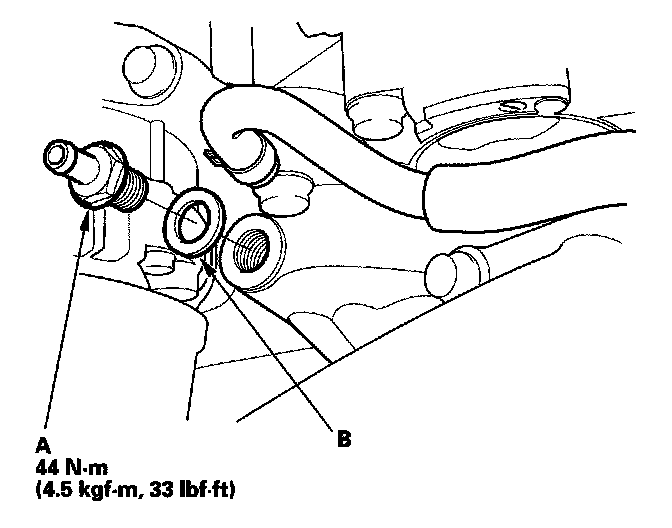

Operation CHARM
: Car repair manuals for everyone.
Home
>>
Honda
>>
2007
>>
Civic Si L4-2.0L
>>
Repair and Diagnosis
>>
Powertrain Management
>>
Emission Control Systems
>>
Positive Crankcase Ventilation
>>
Positive Crankcase Ventilation Valve
>>
Service and Repair
Positive Crankcase Ventilation Valve: Service and Repair
PCV Valve Replacement
1.
Disconnect the
PCV
hose.

2.
Remove the PCV valve (A).
3.
Install the parts in the reverse order of removal with a new washer (B).